Quantum Fields on de Sitter Spacetime
Mode functions, vacuum structure, correlation functions and first-order in-in perturbation theory on a fixed de Sitter background
A research-oriented, symbolically derived, numerically validated and fully reproducible repository.
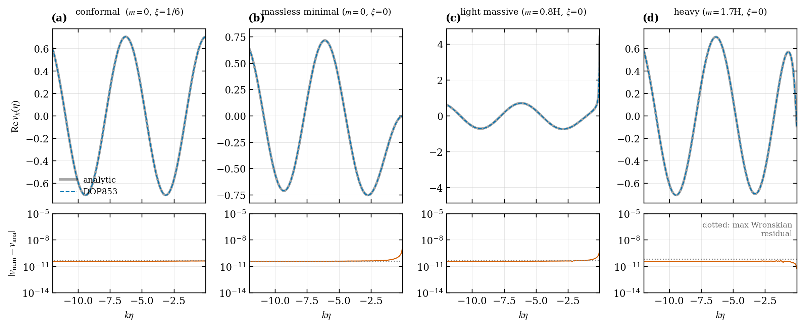
Real part of the rescaled mode function v_k(eta) for four parameter regimes (conformal, massless minimal, light massive, heavy): DOP853 integration versus the analytic Hankel solution, with residuals and the Wronskian floor below.
Table of contents
- Overview
- Quick start
- Repository map
- Theory: from the action to correlators
- 4.1 Conventions and geometry
- 4.2 Action, Klein-Gordon equation, conformal time
- 4.3 The rescaled mode equation and the index nu
- 4.4 Canonical quantization and the Wronskian
- 4.5 Vacuum states
- 4.6 Wightman function and propagators
- 4.7 Ultraviolet structure and renormalization
- 4.8 Infrared structure
- 4.9 Interactions and the in-in formalism
- 4.10 Tree-level contact correlator and secular growth
- 4.11 Tensor perturbations and the boundary with quantum gravity
- Software architecture
- Validation strategy
- Results and figures
- Numerical methods in detail
- API guide
- Reproducibility and provenance
- Notebooks and documentation index
- Scope, limitations and honesty statement
- Roadmap: unimplemented research directions
- Extending the code, and optional third-party libraries
- Glossary
- References, citation and license
1. Overview
This repository investigates quantum fields on a prescribed, classical, four-dimensional de Sitter spacetime. It follows a deliberate ladder of increasing physical content, and every rung is derived, implemented, and independently checked before the next one is built:
classical action -> Klein-Gordon equation -> mode equation -> canonical quantization
-> vacuum state -> Wightman / Green functions -> UV and IR structure
-> lambda phi^4 interaction -> in-in perturbation theory -> tree-level correlator
-> secular growth and perturbative validity -> tensor modes (boundary with quantum gravity)
What this project is
- A symbolically derived pipeline: curvature, field equation, conformal-time equation and mode equation are produced by SymPy and compared with the closed forms, not typed in from memory.
- A numerically validated pipeline: every numerical result has an independent analytic or non-perturbative cross-check with a stated tolerance.
- A reproducible pipeline: every figure comes from an importable function, every run writes a JSON record containing parameters, tolerances, diagnostics, a data hash and software versions.
What this project is not
- It is not a theory of quantum gravity. The metric is a fixed classical background; quantizing a test scalar does not quantize the geometry. See Section 4.11.
- It is not a complete renormalized treatment. One point-splitting subtraction is implemented with its scheme dependence made explicit; no covariant Hadamard renormalization, no loop renormalization of the coupling.
- It does not present any numerical plot as a proof. Each result carries one of six classifications (below).
Result classification used everywhere (docs, docstrings, JSON records)
| Tag | Meaning | Example in this repository |
|---|---|---|
| A | Analytic derivation | Hankel-function Bunch-Davies mode, contact correlator for nu = 1/2 |
| S | Symbolic verification | R = 12 H^2 in three charts; tensor equation from linearized Einstein equations |
| N | Numerical experiment | DOP853 mode evolution, Abel-regularized mode sum |
| P | Perturbative approximation | First-order tree-level contact correlator |
| C | Conceptual discussion | Hadamard condition, renormalization ambiguities, quantum-gravity boundary |
| U | Unimplemented research direction | Loops, second-order in-in, covariant renormalized stress tensor |
2. Quick start
git clone <your-fork-url> quantum-fields-on-de-sitter
cd quantum-fields-on-de-sitter
pip install -e ".[dev]" # numpy, scipy, sympy, mpmath, matplotlib (+ pytest, nbformat, nbclient, ipykernel)
pytest # 82 tests, a few minutes
desitter-qft validate # 17 programmatic checks -> results/validation.json
desitter-qft all --outdir figures # regenerate all 12 figures + results/*.json (about 3 minutes)
python scripts/build_notebooks.py # regenerate and execute the 12 notebooks
python scripts/build_report.py # rebuild reports/technical_report.md from results/*.json
# Mathematically typeset documentation (static HTML, equations pre-rendered with KaTeX, no JavaScript needed)
python scripts/mathfix.py docs/*.md README.md # idempotent: makes math robust in every Markdown renderer
(cd tools/render && npm install && npm run render) # writes docs_html/ ; open docs_html/index.html
The renderer exits non-zero if any equation fails to parse or any $ delimiter is left unrendered, so it doubles as a LaTeX validity check (currently 1,110 equations, 0 errors).
Individual experiments, each producing figures and a JSON record:
| Script | Produces | Content |
|---|---|---|
scripts/reproduce_free_modes.py |
Figs. 1-4, results/free_modes.json |
modes, solver convergence, adiabatic vacuum, power spectra |
scripts/reproduce_two_point.py |
Figs. 5-8, results/two_point.json |
Wightman function, UV structure, IR variance, propagators |
scripts/reproduce_tree_correlator.py |
Figs. 9-12, results/tree_level.json |
contact correlator, secular growth, QM check, tensor spectrum |
A thirty-second sanity check of the whole stack:
from desitter_qft.validation import run_all
for r in run_all():
print("PASS" if r["passed"] else "FAIL", r["name"], f"{r['value']:.2e}")
3. Repository map
quantum-fields-on-de-sitter/
|-- README.md this file
|-- pyproject.toml package metadata, console script `desitter-qft`
|-- references.bib bibliography (see honesty statement)
|-- CITATION.cff, LICENSE citation metadata (placeholders to fill), MIT license
|-- docs/ 18 derivation documents (one per physics topic)
|-- docs_html/ the same documents pre-rendered with KaTeX (open index.html)
|-- tools/render/ Node script that builds docs_html/ and validates every equation
|-- src/desitter_qft/ the importable package (about 1,900 lines)
|-- notebooks/ 12 executed notebooks (thin: they call the package)
|-- tests/ 82 pytest tests, including negative controls
|-- scripts/ reproduction scripts, notebook and report builders
|-- figures/ 12 figures as PNG and PDF
|-- results/ JSON records: parameters, tolerances, hashes, versions
`-- reports/technical_report.md 20-section report, numbers generated from results/
4. Theory: from the action to correlators
This section is a self-contained summary. Full derivations, with every integration by parts and boundary assumption, are in docs/.
4.1 Conventions and geometry
| Item | Choice |
|---|---|
| Signature, units | |
| Riemann | |
| Curvature of dS | |
| Flat chart | |
| Conformal time | |
| Fourier | |
| Mode normalization |
Three charts that must not be conflated. The global chart covers the whole hyperboloid; the spatially flat expanding chart used for all numerics covers half of it and is past-incomplete (so
The de Sitter invariant in the flat chart is
with
4.2 Action, Klein-Gordon equation, conformal time
The variation produces the boundary term
The friction term
Implemented in: scalar_action.py (euler_lagrange_vs_klein_gordon, conformal_time_equation, cosmic_time_equation_difference, cosmic_to_conformal_chain_rule).
4.3 The rescaled mode equation and the index nu
Setting
Rescaling removes the friction term, leaving a flat-space scalar with a time-dependent effective mass, so canonical momentum is simply
The regimes of nu are physically distinct and must not be treated alike:
| Late-time |
Infrared integrability of |
Series | ||
|---|---|---|---|---|
| real, |
grows as |
not integrable ( |
tachyonic | |
| frozen, |
logarithmically divergent | massless minimal | ||
| real | decays as |
integrable | complementary | |
| integrable | boundary | |||
| integrable | principal |
Analytic Bunch-Davies solution. Positive frequency at early times, via
Three core benchmarks:
| Case | Mode | Comment | |
|---|---|---|---|
| all time dependence cancels: Weyl equivalence with flat space | |||
| frozen scale-invariant spectrum |
|||
| massive | generic | Hankel form above | real or imaginary mpmath complex-order Hankel) |
Implemented in: mode_equations.py (derive_rescaled_mode_equation, nu_squared, regime, ModeEquation), analytic_modes.py.
4.4 Canonical quantization and the Wronskian
For
the equal-time commutator holds if and only if
Basis versus state. A Bogoliubov-related basis normalization.check_normalization only reports residuals.
4.5 Vacuum states
| Object | What it is | Not to be confused with |
|---|---|---|
| Classical solution | function obeying the KG equation | an operator |
| Normalized mode basis | solutions with |
a state |
| Fock-space construction | a unique physical vacuum | |
| Quantum state | positive normalized functional on the field algebra | a coordinate system |
| Wightman function | a function with a finite coincident limit | |
| Time-ordered propagator | the Green function of |
|
| Observable | smeared Hermitian operator | a formal mode sum |
Bunch-Davies (BD). The Fock vacuum of the mode that is positive-frequency at the chart's early boundary. It coincides with the Euclidean vacuum, is
Hankel-free confirmation. initial_conditions.adiabatic_data builds WKB adiabatic vacua of order 0, 2, 4 from
4.6 Wightman function and propagators
This is a bi-distribution: at equal times the integrand falls only as
with the remainder integrable like
Closed form (Chernikov-Tagirov, Bunch-Davies):
verified three ways: as a solution of the de Sitter-invariant ODE
Mode-space Green functions for
| Function | Definition | Equation | State dependence |
|---|---|---|---|
| Wightman | BD | ||
| Feynman | BD ( |
||
| Retarded | none (fixed by the CCR) | ||
| Advanced | none |
The delta strengths follow from the Wronskian: the derivative jump of
4.7 Ultraviolet structure and renormalization
With
Hadamard condition (conceptual, [C]). A state is Hadamard if
A numerical cutoff is not a renormalization. For
The one explicit subtraction implemented (two_point.coincident_phi2_pointsplit):
Finite ambiguities, all stated and tested: the scale
4.8 Infrared structure
For real
: frozen spectrum, and the variance of modes between an IR scale and the horizon grows linearly, (that is ). with : since , growth saturates after e-folds near .
Independent benchmark. The point-split
Distinguish an IR-divergent intermediate expression from an ill-defined prediction. Shift-invariant observables (derivative correlators, field differences) are IR finite even at
4.9 Interactions and the in-in formalism
The interaction has no derivatives, so
Why in-in rather than in-out. The expanding patch has no late-time asymptotic region with a free-particle interpretation (
Schwinger-Keldysh contour: time-ordered branch (vertices in_in.schwinger_keldysh_branches and sum to the commutator form (tested).
Assumptions stated explicitly: free BD initial state; adiabatic switch-on; derivative-free vertex so
Independent validation of the formula. The
4.10 Tree-level contact correlator and secular growth
Specification (all items required by the project brief): vertex
Derivation sketch. The
Analytic limit (validation). For
reproduced numerically to
Massless minimal field (nu = 3/2): the secular logarithm. Expanding
For the tested momenta
Perturbative validity (numerical experiment, Fig. 10). The ratio
| nu | Behavior in |
Interpretation |
|---|---|---|
| constant ( |
conformal invariance, no growth | |
| saturates | massive suppression, scale set by |
|
| grows linearly | secular term: fixed-order expansion degrades when |
This signals the breakdown of the fixed-order expansion, not an inconsistency of the theory. Resummation (Starobinsky stochastic dynamics; Starobinsky-Yokoyama; Marolf-Morrison; Hollands) controls the IR sector. Those methods are described, and the equilibrium variance is used as a benchmark, but they are not derived here.
4.11 Tensor perturbations and the boundary with quantum gravity
With
With the standard quadratic action
Numerical integration reproduces the full
What changes when the metric itself is quantized (conceptual, [C]):
- A test scalar has
. Quantizing makes the geometry an operator and the scalar's sources it, giving corrections from matter-gravity and graviton self-interaction vertices. - Gauge fixing (for example de Donder, with Faddeev-Popov ghosts) or reduction to gauge-invariant variables is required; the Hamiltonian and momentum constraints remove unphysical components. De Sitter has no spatial infinity and no globally defined energy, so there is no standard S-matrix.
- General relativity is perturbatively non-renormalizable ('t Hooft-Veltman; Goroff-Sagnotti) but is a valid effective field theory below
(Donoghue), with corrections of order and contested de Sitter infrared issues.
Explicitly not claimed: that quantizing a scalar quantizes gravity; any graviton loop; any solution of the non-perturbative de Sitter quantum-gravity problem.
5. Software architecture
flowchart LR
subgraph SYM[Symbolic layer - SymPy]
B[backgrounds.py] --> SA[scalar_action.py] --> ME[mode_equations.py]
B --> TM[tensor_modes.py]
INT[interactions.py]
end
subgraph ANA[Analytic and special functions - SciPy, mpmath]
AM[analytic_modes.py]
TP[two_point.py]
INF[infrared.py]
end
subgraph NUM[Numerical layer - SciPy ODE and quadrature]
IC[initial_conditions.py] --> NS[numerical_solver.py] --> NM[normalization.py]
PR[propagators.py]
II[in_in.py] --> PT[perturbation_theory.py]
end
ME --> IC
AM --> IC
AM --> TP
AM --> TM
AM --> PT
NS --> PR
TP --> INF
EX[experiments.py] --> FG[figures.py] --> OUT[(figures/ and results/)]
VAL[validation.py] --> OUT
CLI[cli.py] --> FG
CLI --> VAL
The diagram is schematic: arrows show the main dependency and data flow between modules.
Design rules enforced by the layout: symbolic derivations are separate from numerics; essential calculations live in the package, never only in notebooks; experiments return plain arrays (no plotting) so tests, scripts and notebooks share one implementation; plotting and provenance are isolated modules.
| Module | Responsibility | Principal public objects |
|---|---|---|
backgrounds.py |
de Sitter chart handling; symbolic Christoffel, Riemann, Ricci | DeSitter, ricci_scalar, ricci_tensor, flat_chart_metric_cosmic, static_patch_metric |
scalar_action.py |
symbolic Euler-Lagrange, covariant box, cosmic and conformal equations | euler_lagrange_vs_klein_gordon, conformal_time_equation, cosmic_to_conformal_chain_rule |
mode_equations.py |
rescaled mode equation, nu, regime classification | ModeEquation, nu_squared, nu, regime, omega_squared |
analytic_modes.py |
Hankel BD modes and derivatives, closed-form benchmarks | bunch_davies_mode, bunch_davies_mode_derivative, conformal_mode, minimal_massless_mode |
normalization.py |
Wronskian checker, never rescales | wronskian, check_normalization, NormalizationReport |
initial_conditions.py |
exact BD data and WKB adiabatic data (orders 0, 2, 4) | exact_bd_data, adiabatic_data |
numerical_solver.py |
adaptive mode integration with metadata | solve_mode, ModeSolution |
two_point.py |
mode-sum and closed-form Wightman function; UV coefficients; cutoffs; point splitting | wightman_mode_sum, wightman_closed_form, short_distance_coefficients, coincident_phi2_pointsplit, phi2_cutoff |
propagators.py |
mode-space Wightman, Feynman, retarded, advanced | wightman_k, feynman_k, retarded_k, retarded_from_ode |
interactions.py |
symbolic |
interaction_hamiltonian_density, check_dimensions |
in_in.py |
first-order contact integrals, contour rotation, SK branches | contact_correlator, conformal_contact_correlator, massless_minimal_log_coefficient, schwinger_keldysh_branches |
perturbation_theory.py |
QM exact-diagonalization benchmark, secular ratio | qm_first_order_slope, anharmonic_ground_state_cumulant, secular_ratio |
infrared.py |
coarse-grained variance, stochastic equilibrium moments | ir_variance, stochastic_equilibrium_moments |
tensor_modes.py |
symbolic tensor equation, tensor spectrum | derive_tensor_equation, dimensionless_tensor_spectrum |
experiments.py |
reproducible experiment functions returning arrays | one function per figure group |
figures.py, plotting.py |
publication style, Okabe-Ito palette, figure builders | make_free_mode_figures, make_two_point_figures, make_tree_figures |
provenance.py |
environment capture, rounded-array hashing, JSON records | environment_info, hash_arrays, write_record |
validation.py, cli.py |
17 programmatic checks; console entry point | run_all, main |
6. Validation strategy
The guiding rule: no result is trusted because one code path produced it. Each quantity is verified by a second, structurally different route, and tests are designed to fail when the physics is wrong (negative controls).
6.1 Independent-check matrix
| Quantity | Route 1 | Independent route 2 (and 3) | Agreement |
|---|---|---|---|
| Curvature |
cosmic chart | conformal chart; static patch | exact (symbolic) |
| Conformal-time KG equation | covariant box | chain rule from cosmic time | exact (symbolic) |
| Hankel mode | Wronskian |
direct ODE substitution via mpmath derivatives; DOP853 integration; WKB adiabatic vacuum | |
| closed form | Hankel mode | ||
| Wightman function | Abel mode sum | hypergeometric closed form; invariant ODE; |
|
| Short-distance coefficients | DLMF 15.8.10 | Frobenius recursion for |
residual |
| Retarded function | Hankel modes | numerical ODE with unit-slope initial data | |
| In-in first order | derived formula | exact diagonalization of quartic oscillator | |
| Contour rotation | rotated contour | real-axis Abel damping, extrapolated to zero | linear convergence in |
| Contact correlator | numerical contour | analytic |
|
| Double versus extended precision | scipy backend | mpmath backend | |
| Light-field variance | point-split |
Fokker-Planck Gaussian equilibrium | ratio |
| Tensor equation | SymPy Einstein tensor | claimed form | exact (symbolic) |
| Tensor spectrum | numerical ODE |
6.2 The 17 programmatic checks (desitter-qft validate)
Symbolic: results/validation.json with tolerances.
6.3 Negative controls (tests that must be able to fail)
- Wrong normalization:
has Wronskian and the checker flags residual . - Wrong curvature sign convention: asserting
fails. - Wrong
: the closed-form conformal mode does not solve the minimally coupled equation (residual ). - Wrong sign of the in-in slope would fail the exact-diagonalization comparison.
- Bogoliubov coefficients violating
break the Wronskian (notebook 06). - Hash sensitivity: perturbing data by
changes the recorded hash.
6.4 What the numerics do and do not establish
Numerical agreement validates, but does not prove, the analytic statements. A plot is never used as a proof; each figure is accompanied by the analytic or independent result it checks.
7. Results and figures
All figures are generated by desitter-qft all and saved as PNG and PDF. Each caption states the claim and its classification.
7.1 Geometry and horizon crossing (Fig. 1) [A, S]
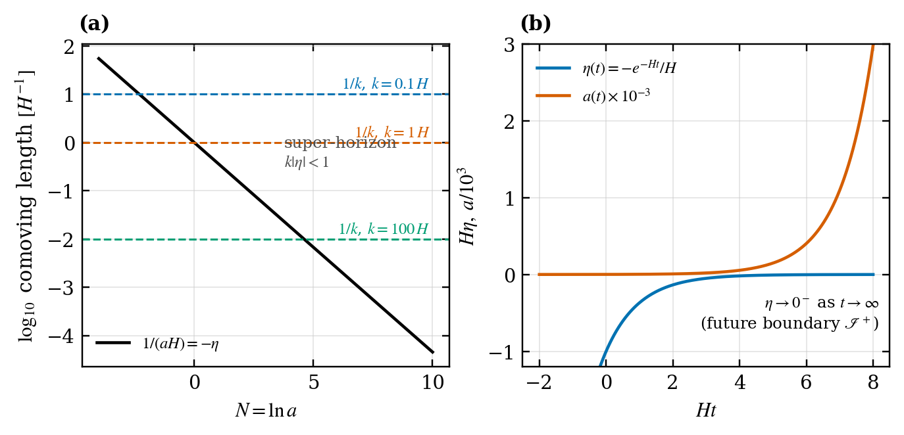
The comoving Hubble radius
7.2 Modes, solver convergence and the vacuum (Figs. 2-3) [A, N]
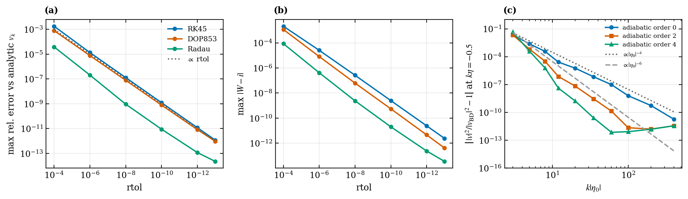
(a) Maximum relative error versus analytic mode scales linearly with rtol over nine decades for RK45, DOP853 and Radau before saturating near
Recorded diagnostics (results/free_modes.json, rtol
| Case | max abs error | initial |
max |
|---|---|---|---|
| conformal | |||
| massless minimal | |||
| light massive ( |
7.3 Power spectra and freeze-out (Fig. 4) [A, N]
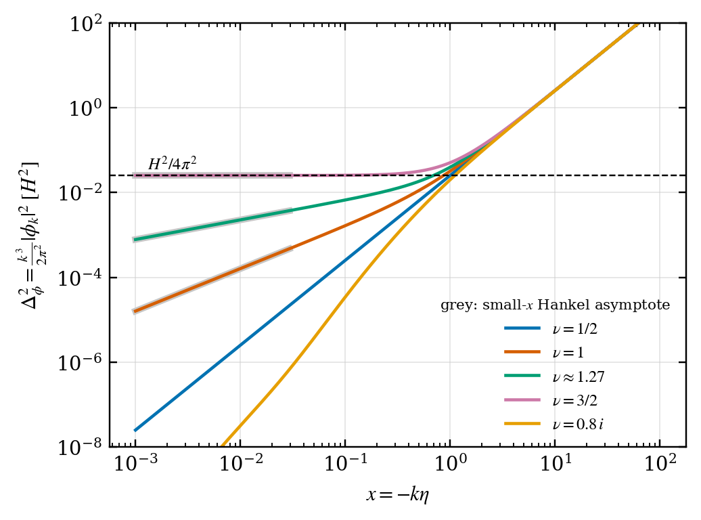
The dimensionless spectrum
7.4 Wightman function: mode sum versus closed form (Fig. 5) [A, N]
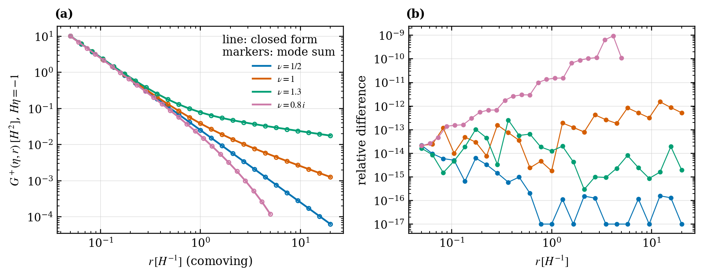
The Abel-regularized mode sum (markers) reproduces the hypergeometric closed form (lines) to
7.5 Ultraviolet structure (Fig. 6) [A, N]
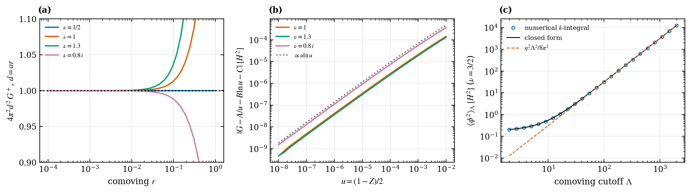
(a) The leading singularity is the flat-space
7.6 Infrared variance (Fig. 7) [N]
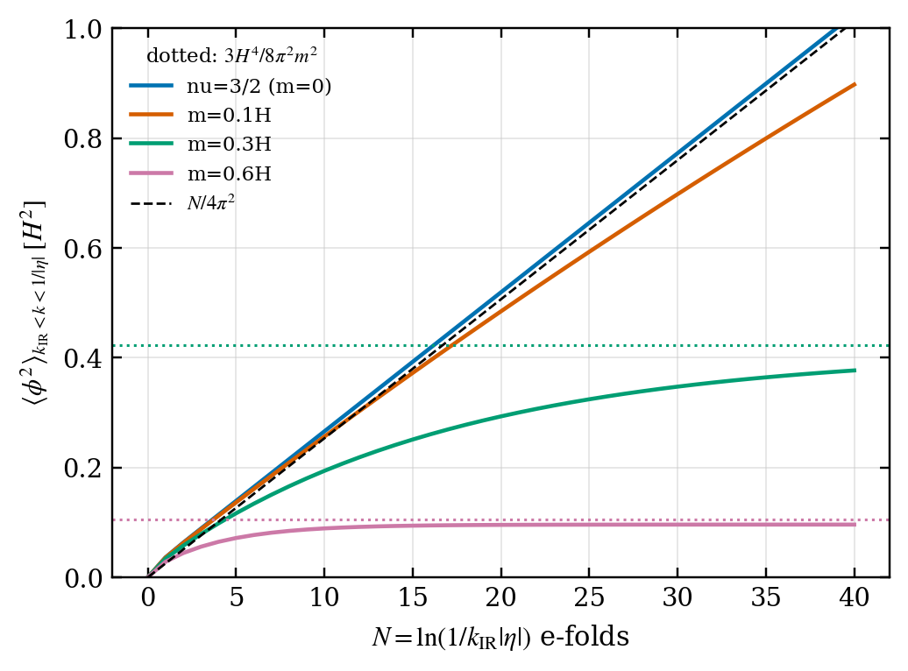
For
7.7 Propagators (Fig. 8) [A, N]
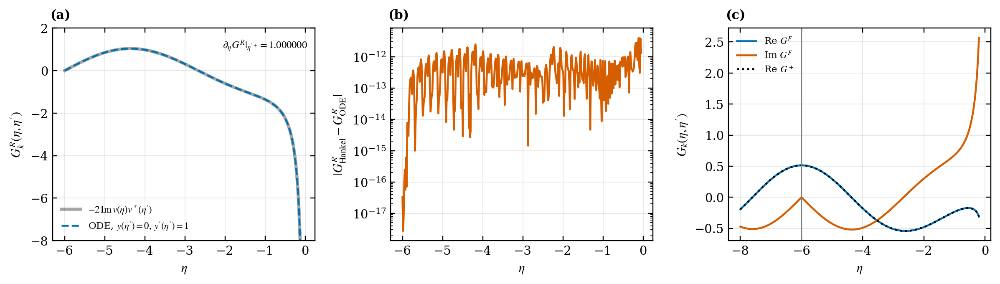
(a, b) The retarded function from Hankel modes agrees with an independent Hankel-free ODE solution to
7.8 Tree-level contact correlator (Fig. 9) [P, N]
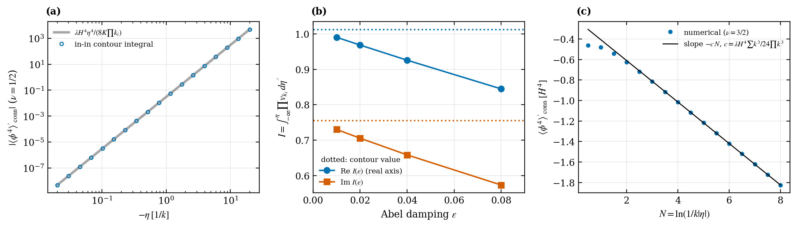
(a) Conformal case: numerical in-in integral versus the analytic
7.9 Secular growth and perturbative validity (Fig. 10) [N]
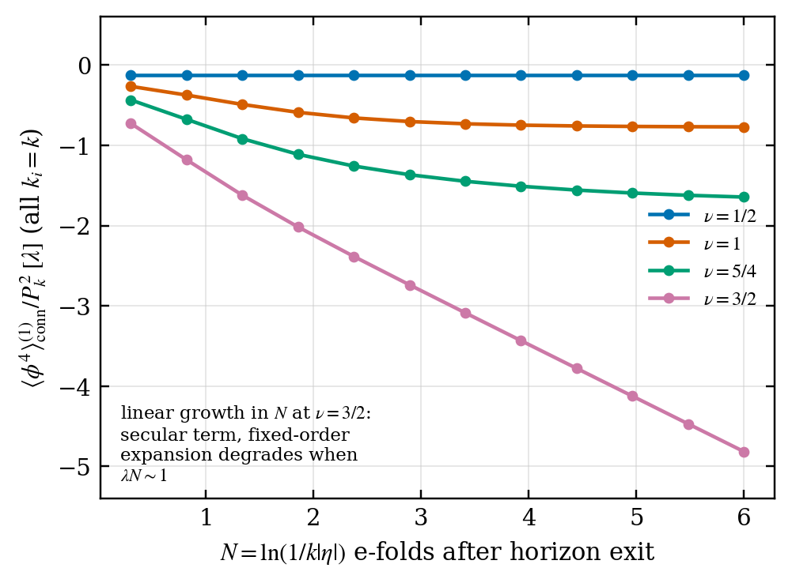
Conformal: constant. Massive: saturating. Massless minimal: linear in
7.10 In-in versus exact diagonalization (Fig. 11) [P]
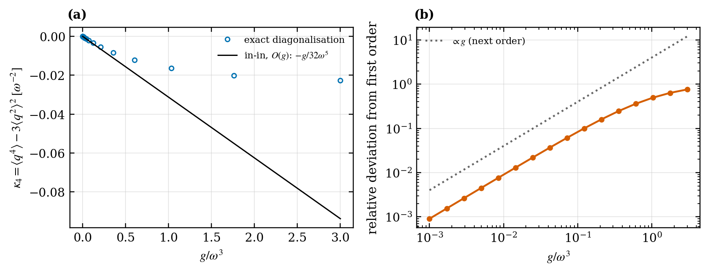
The exact fourth cumulant approaches the first-order in-in line as
7.11 Tensor spectrum (Fig. 12) [S, A, N]
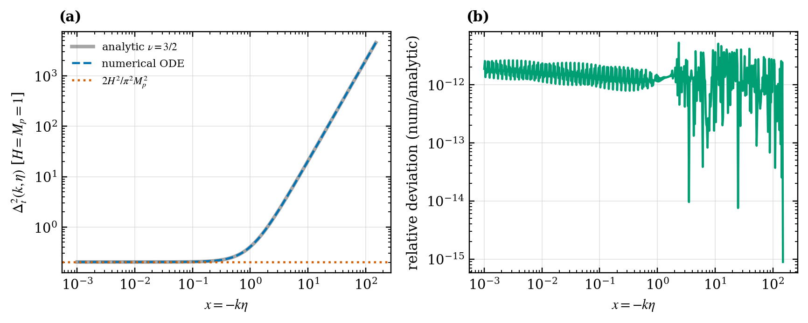
Numerical integration of the tensor mode equation reproduces the analytic
8. Numerical methods in detail
| Component | Method | Notes |
|---|---|---|
| Mode ODE | scipy.integrate.solve_ivp, default DOP853 (also RK45, Radau) |
state rtol atol about rtol or |
| Scaling | all numerics at |
|
| Hankel functions | scipy.special.hankel1, jv, yv for real order; mpmath.hankel1 for imaginary order |
derivative via DLMF 10.6.2 |
| Hypergeometric and Gamma | mpmath.hyp2f1, gamma, digamma |
30-40 digits |
| Distributional |
QUADPACK QAWF (weight='sin') on the tail, ordinary QAGS on the head |
Abel-regularized by subtracting |
| In-in time integral | contour rotation |
double precision (scipy.quad) or 40-digit mpmath.quad |
| WKB initial data | symbolic iteration, lambdified | even orders 0, 2, 4 |
| Exact diagonalization | scipy.linalg.eigh in an oscillator basis (up to 140 states) |
Known precision hazards, handled explicitly.
- Late-time in-in: the imaginary part is a difference of quantities of magnitude
for ; double precision would lose most digits, so contact_correlatordefaults to the 40-digitmpmathbackend forand a test cross-checks both backends elsewhere. - Wronskian growth: the residual scales with
; for the tensor mode at it reaches about at rtol. This is reported, never hidden by rescaling. - Imaginary-order Hankel evaluation through
mpmathlimits tail-integral accuracy to aboutabsolute, so imaginary- position-space tests stop at .
9. API guide
9.1 Solve and audit a mode
from desitter_qft.mode_equations import ModeEquation, regime
from desitter_qft.initial_conditions import adiabatic_data
from desitter_qft.numerical_solver import solve_mode
from desitter_qft.normalization import check_normalization
from desitter_qft.analytic_modes import bunch_davies_mode
eq = ModeEquation(k=1.0, m=0.8, xi=0.0) # nu = 1.2689 (real: complementary series)
print(eq.nu, regime(eq.nu2))
v0, dv0 = adiabatic_data(eq, eta0=-100.0, order=4) # Hankel-free WKB initial data
sol = solve_mode(eq, -100.0, -0.05, v0, dv0, rtol=1e-11, atol=1e-13)
rep = check_normalization(sol.eta, sol.v, sol.dv, rtol=1e-11, atol=1e-13, method="DOP853")
print(rep.max_residual, rep.passes) # about 4.5e-11, True (no rescaling applied)
ref = abs(bunch_davies_mode(sol.eta[-1], 1.0, eq.nu))**2
print(abs(sol.v[-1])**2 / ref - 1) # about -1.2e-11: converged to Bunch-Davies
9.2 Two-point function and short-distance structure
from desitter_qft.two_point import (wightman_mode_sum, wightman_closed_form_equal_time,
short_distance_coefficients, coincident_phi2_pointsplit)
print(wightman_mode_sum(-1.0, 1.0, 1.3)) # 0.0785331553854931 (Abel mode sum)
print(wightman_closed_form_equal_time(-1.0, 1.0, 1.3)) # 0.07853315538549409 (closed form)
A, B, C = short_distance_coefficients(1.3) # G = A/u + B ln u + C + O(u ln u)
phi2 = coincident_phi2_pointsplit(1.3, mu=1.0) # scheme-dependent finite part (see Section 4.7)
9.3 First-order in-in correlator
from desitter_qft.in_in import (contact_correlator, conformal_contact_correlator,
massless_minimal_log_coefficient)
ks = [1.0, 1.3, 0.7, 1.1]
print(contact_correlator(-0.5, ks, nu=0.5, lam=1.0)) # -0.0019035842206573913
print(conformal_contact_correlator(-0.5, ks, lam=1.0)) # -0.001903584220657392 (analytic)
c = massless_minimal_log_coefficient(ks, lam=1.0) # 0.2023507: coefficient of ln(-eta) at nu = 3/2
contact_correlator(..., backend="auto" | "mp" | "scipy") selects extended or double precision; auto uses mp for
9.4 Symbolic derivations
from desitter_qft.backgrounds import flat_chart_metric_conformal, ricci_scalar
from desitter_qft.scalar_action import euler_lagrange_vs_klein_gordon
from desitter_qft.tensor_modes import derive_tensor_equation
g, X = flat_chart_metric_conformal(); print(ricci_scalar(g, X)) # 12*H**2
print(euler_lagrange_vs_klein_gordon()[2]) # 0
print(derive_tensor_equation()["difference_from_claim"]) # 0
9.5 Infrared benchmark and tensor spectrum
from desitter_qft.infrared import stochastic_equilibrium_moments, free_massive_stochastic_phi2
from desitter_qft.tensor_modes import tensor_spectrum_late_time
print(stochastic_equilibrium_moments(lambda p: p**4/24)[2]) # 0.3227558 (lambda = 1, H = 1)
print(tensor_spectrum_late_time()) # 0.2026424 = 2/pi^2
9.6 Command line
desitter-qft free-modes --outdir figures
desitter-qft two-point --outdir figures
desitter-qft tree --outdir figures
desitter-qft validate --outdir figures
desitter-qft all --outdir figures
10. Reproducibility and provenance
Every experiment writes a record to results/ with:
- model parameters, initial conditions, integration interval, solver method and tolerances;
- numerical precision and error diagnostics (Wronskian reports, maximum residuals, function-evaluation counts);
data_sha256: a SHA-256 of the output arrays rounded to 10 decimals, insensitive to last-bit noise;- software versions captured at run time (Python, NumPy, SciPy, SymPy, mpmath, Matplotlib).
Determinism is tested: repeated runs of the quartic-oscillator and tensor experiments give identical hashes, and a reports/technical_report.md section 17 is generated from the JSON records by scripts/build_report.py, so the report cannot drift from the code.
| File | Written by | Content |
|---|---|---|
results/free_modes.json |
reproduce_free_modes.py |
mode runs, Wronskian reports, tolerance sweep |
results/two_point.json |
reproduce_two_point.py |
mode-sum versus closed-form errors, propagator diagnostics |
results/tree_level.json |
reproduce_tree_correlator.py |
contact correlator, QM check, tensor spectrum |
results/validation.json |
desitter-qft validate |
all 17 checks with tolerances |
11. Notebooks and documentation index
Notebooks (all executed; they call the package and display the stored figures)
| Notebook | Topic | Tag |
|---|---|---|
01_geometry_and_curvature |
curvature in three charts, horizon crossing | S |
02_klein_gordon_derivation |
action to KG, two derivations of the conformal equation | S |
03_free_mode_equations |
rescaled equation, nu regimes | S, A |
04_analytic_mode_solutions |
Hankel modes, Wronskian, ODE substitution | A |
05_numerical_mode_evolution |
solver, tolerance sweep, adiabatic vacuum | N |
06_canonical_quantization |
Wronskian, Bogoliubov invariance and violation | A |
07_vacuum_structure |
IR integrability versus nu, cutoff variance | A, N |
08_wightman_functions |
mode sum versus closed form, UV coefficients | A, N |
09_interacting_scalar_fields |
S | |
10_in_in_perturbation_theory |
QM exact-diagonalization validation, SK branches | P |
11_tree_level_correlators |
contact correlator, log, secular ratio | P, N |
12_tensor_perturbations |
tensor equation, spectrum | S, N |
Derivation documents (docs/)
conventions | de_sitter_geometry | scalar_action | klein_gordon_derivation | conformal_time | mode_equation | canonical_quantization | vacuum_states | wightman_functions | propagators | interacting_scalar_fields | in_in_formalism | perturbative_correlators | infrared_structure | ultraviolet_structure | renormalization | tensor_perturbations | limitations
12. Scope, limitations and honesty statement
Implemented and validated: free scalar for real, marginal and imaginary nu; Wightman function and short-distance structure; mode-space Green functions; first-order tree-level contact correlator; tensor modes on a fixed background.
Explicit limitations:
- Fixed four-dimensional de Sitter, spatially flat chart only. The BD state is a statement about the chart boundary, not an initial condition on a complete Cauchy surface.
- For
the BD two-point function is infrared divergent; results with a cutoff depend on it. - Point-splitting constants are scheme dependent and are not claimed to be unique or fully covariant.
- Secular growth signals the breakdown of the fixed-order expansion, not an inconsistency of the theory.
- Double-precision Hankel evaluation loses digits at late times for generic nu;
mpmathis used where it matters. - The tensor-action normalization is quoted from the literature and validated by reproducing the standard spectrum; it is not rederived symbolically from the Einstein-Hilbert action.
- Numerical agreement validates but does not prove analytic statements.
Metadata caveats:
references.bibwas written from bibliographic knowledge and has not been machine-verified against Crossref or INSPIRE. Verify volume, page and DOI fields before citing.CITATION.cffandLICENSEcontain placeholders for author name and repository URL. Fill them before publishing.
13. Roadmap: unimplemented research directions
| Direction | What it needs | Priority |
|---|---|---|
| Second-order and exchange diagrams | nested time integrals, |
high |
| One-loop tadpole with covariant Hadamard renormalization | Hadamard recursion for |
high |
| Stochastic resummation versus fixed-order in-in | Fokker-Planck solver, comparison at overlapping orders | high |
| Bogoliubov-transformed modes, antipodal singularity diagnostics | medium | |
| Global chart and static-patch (thermal) analysis | other mode bases, Gibbons-Hawking temperature check | medium |
| Scalar and vector metric perturbations with constraints | gauge-invariant variables, constraint solution | medium |
| Graviton interactions and EFT loops | cubic action, gauge fixing, ghosts | long term |
| Boundary correlators and dS/CFT-like structure | late-time operator expansion | long term |
14. Extending the code, and optional third-party libraries
The repository currently depends only on NumPy, SciPy, SymPy, mpmath and Matplotlib (plus pytest and the notebook stack for development). Third-party libraries are welcome for the research directions above. None of the following are currently used; they are suggestions, each tied to a concrete bottleneck:
| Library | Possible role | Motivation |
|---|---|---|
numba or jax |
JIT or autodiff for mode integration and quadrature | speed for large |
diffrax (with jax) |
differentiable, high-order ODE solving | sensitivity of correlators to parameters |
cadabra2 or sympy.diffgeom |
tensor algebra for metric perturbation expansions | deriving the cubic gravity action and constraints |
flint / python-flint or gmpy2 |
faster arbitrary-precision arithmetic | accelerating the late-time mpmath evaluations |
emcee or scipy.stats |
uncertainty exploration across |
mapping the validity region of fixed-order expansions |
h5py or zarr |
storage of large correlator grids | scaling data/ beyond JSON |
sphinx with myst-parser |
rendered documentation from docs/ |
publication-grade documentation site |
Adding a new observable, in four steps: derive the expression in a docs/ file with its assumptions; implement it in the package with a docstring giving its classification tag; add an independent check (second analytic route or non-perturbative benchmark) and at least one negative control in tests/; register a programmatic check in validation.py and an experiment in experiments.py so that the figure, JSON record and report update together.
15. Glossary
| Term | Meaning here |
|---|---|
| Bunch-Davies state | Fock vacuum of the mode that is positive-frequency at the early boundary of the flat chart; the Euclidean vacuum |
| Conformal time | |
| Wronskian | |
| Wightman function | |
| Hadamard state | state whose two-point function has the universal local singular structure fixed by geometry |
| Abel summation | regularization of conditionally convergent oscillatory integrals by an exponential damping factor taken to zero |
| In-in formalism | closed-time-path computation of expectation values in a specified initial state |
| Contact diagram | tree diagram with a single vertex connecting all external legs |
| Secular term | contribution growing with time (here logarithmically in the scale factor) that spoils fixed-order perturbation theory |
| Super-horizon | modes with |
| Cumulant |
connected fourth moment |
| Principal / complementary series | imaginary / real |
16. References, citation and license
The full bibliography is in references.bib (see the verification caveat in Section 12). Principal sources by topic:
- Foundations: Birrell and Davies (1982); Wald (1994).
- de Sitter vacua and Wightman functions: Chernikov and Tagirov (1968); Bunch and Davies (1978); Mottola (1985); Allen (1985); Allen and Folacci (1987); Gibbons and Hawking (1977).
- In-in formalism: Schwinger (1961); Keldysh (1964); Calzetta and Hu (1987); Weinberg (2005); Maldacena (2003).
- Infrared and stochastic methods: Starobinsky (1986); Starobinsky and Yokoyama (1994); Marolf and Morrison (2011); Hollands (2013).
- UV structure and renormalization: Wald (1977); Radzikowski (1996); Hollands and Wald (2001).
- Tensors and quantum gravity: Grishchuk (1974); Starobinsky (1979); Mukhanov, Feldman and Brandenberger (1992); 't Hooft and Veltman (1974); Goroff and Sagnotti (1986); Abbott and Deser (1982); Donoghue (1994).
- Special functions and software: NIST DLMF; Hairer, Norsett and Wanner; SciPy, NumPy, SymPy, mpmath, Matplotlib.
Citing. Use CITATION.cff after replacing the placeholder author and repository fields.
License. MIT (see LICENSE).